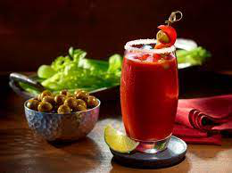
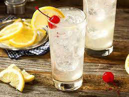
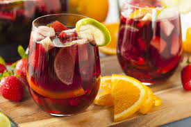
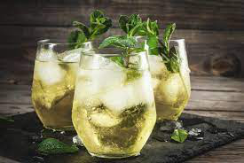

Bloody Mary
Ingredientes
- 70 ml de vodka
- 210 ml de zumo de tomate
- 15 ml de zumo de limon
- Salsa Tabasco dos gotas
- Salsa Worcestershire tres gotas
- Pimienta negra molida
- Apio
Elaboración paso a paso
- A la hora de condimentar este cóctel, es fundamental un buen toque de salsa Perrins, muy
poco Tabasco (dos gotas) para no pasarnos de picante agresivo y dos o tres vueltas de
pimienta negra que completarán el efecto picante, para que quede en su punto.
- Agregamos también el zumo de limón, aproximadamente 15 ml y agitamos con un cubo de hielo
para mezclar bien y enfriar. Continuamos con el vodka, utilizando la medida del jigger
pequeño o grande, en función de la proporción de alcohol que se desee incorporar. Lo
habitual es utilizar una tercera parte de la cantidad de zumo de tomate que se vaya a usar.
Para 210 ml de tomate, utilizaremos 70 ml de vodka y la proporción quedará en su punto. No
obstante, con la experiencia de Kike el lo hace a ojo (y lo clava). Para incorporar el apio
y la sal.
- No obstante, para terminar la preparación, vamos a meter una ramita de apio dentro del vaso
dejando que asome por fuera que servirá para remover nuestro Bloody Mary, como si fuera una
cucharilla. Ya sólo falta el zumo de tomate y agitar para que esté en su punto. Finalizando
con la ramita de apio fresco. En caso de añadir hielo, hay que hacerlo al terminar de
servir, sin echar más de dos cubitos para que nuestro Bloody Mary no quede aguado.

Tom Collins

Ingredientes
- 50 ml de ginebra
- 100 ml de zumo de limon
- 100 ml de soda
- 1 cucharda de azucar
- Hielo
Elaboración paso a paso
- Vierte en el vaso el zumo de un limón (aproximadamente 100 ml), una cucharada de azúcar o
sirope, dos medidas de ginebra y, finalmente, la soda (te cabra medio botellín). Remueve
bien para que se diluya el azúcar. Añade tres o cuatro o cubitos de huelo y una rodaja de
limón y a disfrutar.
Clericot o clerico
Ingredientes
- 33cl de vino blanco espumoso
- 1 melocoton
- 2 ciruelas
- 1 limon
- 5ml de crema de Cassis
- Hielo
Elaboración paso a paso
- Vamos a cortar en dos el melocotón y las ciruelas. En seguida los cortamos en trocitos y
colocamos en una jarra. Agregamos unas gotas de jugo de limón y la crema de Cassis.
Revolvemos y agregamos hielo. Vertemos poco a poco el vino espumoso revolviendo todo el
contenido con cuidado. Agregamos más hielo y servimos en copas de tipo flautas o en vasos
cortos tipo old fashion según lo que tengamos disponible.

Rebujito

Ingredientes
- 75 ml de Vino Manzanilla
- Fino
- Montilla Moriles o similar
- 500 ml de refresco de lima o gaseosa
- 4 ramitas de Hierbabuena
- Hielo abundante
Elaboración paso a paso
- Mezclamos el vino fino con el refresco carbónico con sabor a lima o limón. Los utilizados
más habitualmente son el 7Up y el Sprite, pero podéis utilizar los que más os gusten. Lo
importante es que estén muy fríos y que no tengan un sabor muy potente que pueda cambiar el
sabor de la mezcla. Conviene escaldar unos segundos la hierbabuena para eliminar toda
impureza que pueda tener y para que su sabor no tape en exceso el de los dos ingredientes
fundamentales. Una vez escaldada y refrescada, separamos los palos de las hojas y añadimos
estas últimas a la jarra, añadiendo hielos para que la bebida resultante se mantenga bien
fría.
Agua de valencia
Ingredientes
- Zumo de naranja
- Ginebra
- Vodka
- Champagne o cava
Elaboración paso a paso
- Comenzamos llenando el 33% de una jarra con zumo de naranja natural, agregamos un 16% de
ginebra y otro 16% de vodka. Por último, incorporamos un 33% de cava o champagne, removemos
suavemente y trasladamos a la nevera donde la dejamos enfriar por espacio de una hora antes
de servir y disfrutar de este maravilloso cóctel siempre que queráis.